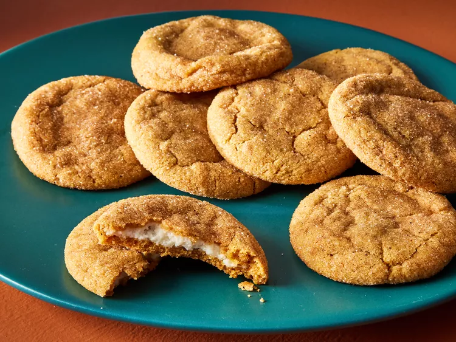

Odin Recipes
Recipe of Zucchini Brownies
Recipe of Pumpkin Cheesecake Cookies

Recipe of Pumpkin Spice Latte Pancakes

:max_bytes(150000):strip_icc():format(webp)/8386087_Pumpkin-Spice-Latte-Pancakes_TheDailyGourmet_4x3-ee141c7b4b3e4b66bf31f110d20a4211.jpg)